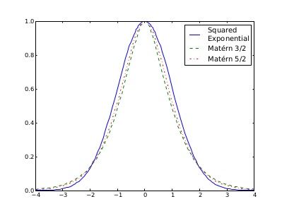

Options in settings.dat
| Variable Name Default Value | Meaning | |
|---|---|---|
MODEL_OUTPUT_DIRECTORYmodel_output |
The directory (relative to the working directory) where the model inputs and outputs can be found. | |
EXPERIMENTAL_RESULTS_DIRECTORYexperimental_results |
The directory (relative to the working directory) where the experimental observations can be found. | |
GENERATE_TRAINING_POINTS_NUMBER_OF_POINTS100 |
The number of training points generated by | |
GENERATE_TRAINING_POINTS_PERCENTILE_PARTITION1 |
If the prior distribution for a parameter is not uniform, should the training points be percentiles from the distribution, or should they be evenly spaced? | |
GENERATE_TRAINING_POINTS_STANDARD_DEVIATIONS3 |
If the prior distribution for a parameter is Gaussian, how far out should the uniformly-spaced sampled points go? | |
PCA_FRACTION_RESOLVING_POWER0.95 |
When | |
EMULATOR_COVARIANCE_FUNCTIONSQUARE_EXPONENTIAL_FUNCTION |
||
|  | ||
EMULATOR_REGRESSION_ORDER1 |
The assumed functional form of the model before Gaussian Process Emulation. This is the order of the polynomial. 0, 1, 2,or 3. | |
EMULATOR_NUGGET0.001 |
||
EMULATOR_AMPLITUDE1 |
||
EMULATOR_SCALE0.01 |
See Covariance Functions. The final value ofr each parameter's scale will be | |
MCMC_NUMBER_OF_SAMPLES100 |
How many samples should | |
MCMC_NUMBER_OF_BURN_IN_SAMPLES0 |
The number of MCMC samples to be discarded at the beginning of the MCMC run. | |
MCMC_USE_EMULATOR_COVARIANCE0 |
Should the variance returned by the Gaussian Process Emulator be used in the likelihood calculation? | |
MCMC_STEP_SIZE0.1 |
How big should each step be in the Metropolis Hastings algorithm? (This will be scaled by the characteristic length of each parameter's prior distribution) | |